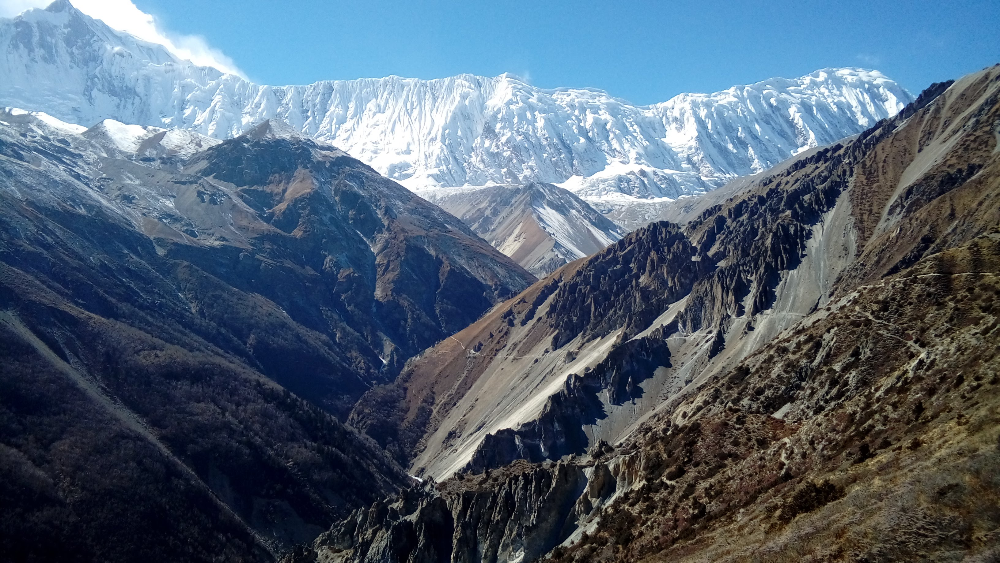
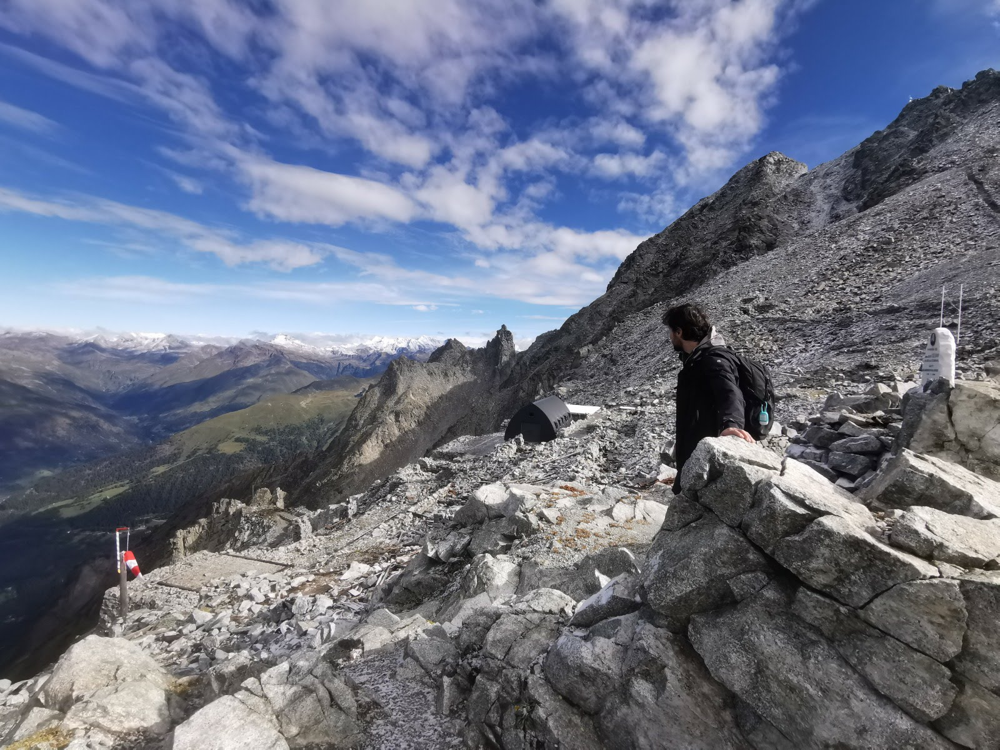
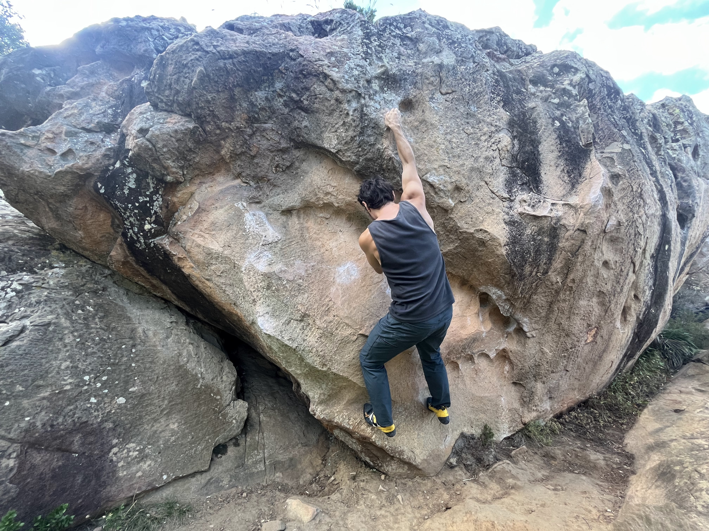

A Few Nonlinearities
I was part of the Salsa team at the University of Edinburgh in 2011-2012, and I acted in a solemn re-interpretation of A Midsummer Night's Dream, where I played Lysander. These days I enjoy climbing, fancy coffee, ultimate frisbee, and hiking.
I have hiked in Nepal, including the Annapurna region, the French and Italian Alps, and Scotland.
Old traces: Learning to be a Quantitative Financial Analyst and Cartoon Optimization.


